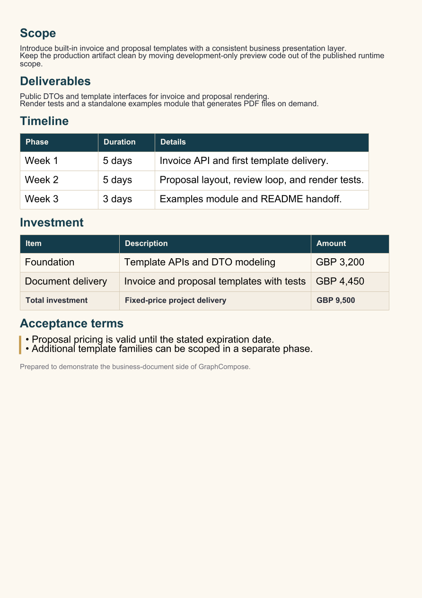

Stream straight into HTTP responses
session.writePdf(OutputStream) writes incrementally with no in-memory buffering. Spring Boot, Quarkus, Micronaut, or plain Java HTTP.
Java · v1.6 · MIT
A semantic layout engine for Java services that need structured, paginated, theme-driven PDF output — CVs, invoices, proposals, reports.
No drawing API. No pixel arithmetic. You compose ParagraphNode, TableNode, SectionNode; GraphCompose handles measurement, pagination, fonts, and PDFBox rendering.


The whole stack — theme tokens, table, totals, chrome — behind one fluent DSL.
Tables split row-by-row, rows are atomic, layer stacks atomic. No manual page math.
Every preset is one final class with a one-liner create(BusinessTheme) factory.
819 green tests, layout snapshots per preset, pixel-diff visual parity gate, public-API leak guards.
Install
<repository>
<id>jitpack.io</id>
<url>https://jitpack.io</url>
</repository>
<dependency>
<groupId>com.github.DemchaAV</groupId>
<artifactId>GraphCompose</artifactId>
<version>v1.6.0</version>
</dependency>repositories { maven { url 'https://jitpack.io' } }
dependencies {
implementation 'com.github.DemchaAV:GraphCompose:v1.6.0'
}try (var doc = GraphCompose.document(out).create()) {
doc.pageFlow()
.addParagraph("Hello, GraphCompose")
.addList(l -> l.items("PDF", "DOCX", "Tables"))
.build();
doc.buildPdf();
}Showcase
Every example below is a real, runnable Java file. Click the preview to open the rendered PDF, or jump straight into the source.
Loading examples...
Architecture
ParagraphNode, TableNode, SectionNode, LayerStackNode, CanvasLayerNode.LayoutGraph — geometry only, no draw calls.FixedLayoutBackend consumes placed fragments. Default: PdfFixedLayoutBackend via PDFBox. DOCX backend exists for editable output.Why GraphCompose
session.writePdf(OutputStream) writes incrementally with no in-memory buffering. Spring Boot, Quarkus, Micronaut, or plain Java HTTP.
Every preset has a layout-graph JSON baseline plus a pixel-diff visual parity baseline. Regressions surface on the first run.
BusinessTheme.modern() / .classic() / .executive() set palette, typography, table styles. Override one or all.
Inline **bold**, *italic*, _italic_ markers parsed in every paragraph and list block automatically.